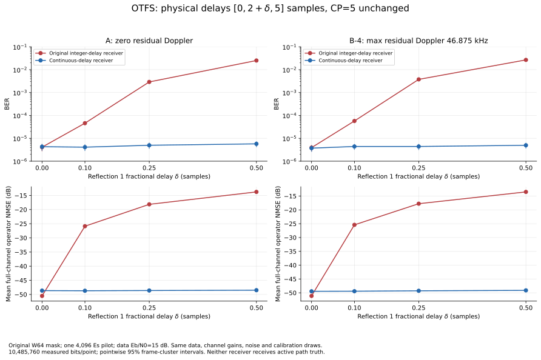
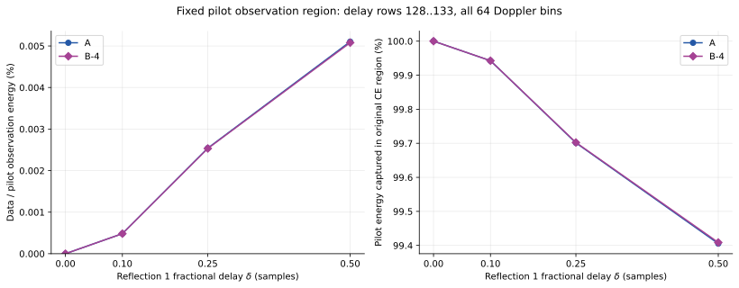

Reflection 1 delay만 2→2.1→2.25→2.5 samples로 바꿨다. LOS=0, reflection 2=5 samples, CP=5 samples, W64 layout, pilot energy=4,096 Es, data Eb/N0=15 dB를 유지했다. 모든 점은 같은 data/channel-gain/noise/calibration draws와 10,485,760 measured bits를 사용한다.
각 CP+useful slot의 기존 waveform을 signed FFT frequencies의 finite Fourier series로 정의하고, serial channel이 t−delay의 실제 source slot을 선택해 평가했다. Whole-frame circular channel이나 추가 interpolation FIR를 사용하지 않았다. Physical delays가 CP 이내이므로 useful outputs는 자기 slot의 CP+useful waveform에서 온다. DD response의 spreading은 CP 부족에 따른 inter-slot interference를 의미하지 않는다. RF/matched filtering은 추가하지 않았다.
두 receiver 모두 같은 six receive delay rows 128..133와 모든 64 Doppler bins, known P=3, delay bounds 0..5 samples와 Doppler bounds ±46.875 kHz만 사용한다. Actual delta/delays/frequencies/gains를 알려주지 않았다. 기존 receiver는 integer-delay hypotheses를 유지한다. Continuous-delay receiver는 공개된 0.25-sample 초기 lattice와 기존 frequency grid에서 시작해 세 paths의 continuous delays/frequencies와 joint-LS gains를 추정한다. 최적화는 local approximate ML이며 global optimum을 보장하지 않는다. Full DD MMSE와 estimated-channel self-gain 기반 Gray decisions를 유지했다.
B-4에서 δ=0→0.5일 때 기존 receiver BER은 3.91006e-06→0.0267033, continuous-delay receiver BER은 3.71933e-06→4.95911e-06였다. δ=0.5의 full-channel operator NMSE는 각각 -13.498 / -49.112 dB다. 같은 fractional channel에서 기존 receiver와 continuous-delay receiver를 구분해야 channel assumption과 model mismatch를 분리해 해석할 수 있다.
이 model에서는 fractional delay를 추정해도 BER이 10^-6 수준으로 유지됐다. 기존 성능 격차를 integer-grid alignment만으로 설명할 수 있다는 결론은 얻지 못했다. Known P=3, fixed path gains/Dopplers, ideal waveform, wide guard와 high pilot energy 등 다른 조건의 영향은 남아 있다.
기존 receiver의 δ=0은 원래 214개 frames의 error counts를 재현했다. Continuous-delay receiver는 δ=0에서도 delay를 추정할 수 있는 parameter space가 커지므로 기존 receiver와 완전히 같은 algorithm은 아니다. 작은 BER 차이만으로 우열이나 동등성을 단정하지 않는다. 이 결과는 고정된 sparse three-path, ideal Fourier-waveform model에 대한 검증이다.


| Condition | δ (samples) | Receiver | Errors / bits | BER | 95% frame interval | Operator NMSE (dB) | Data / pilot energy (%) |
|---|---|---|---|---|---|---|---|
| A | 0 | Original integer-delay receiver | 43 / 10,485,760 | 4.1008e-06 | [2.7199e-06, 5.4817e-06] | -50.510 | 1.5448e-30 |
| A | 0 | Continuous-delay receiver | 45 / 10,485,760 | 4.29153e-06 | [2.8709e-06, 5.7122e-06] | -48.640 | 1.5448e-30 |
| A | 0.1 | Original integer-delay receiver | 480 / 10,485,760 | 4.57764e-05 | [4.1304e-05, 5.0249e-05] | -25.873 | 0.00048324 |
| A | 0.1 | Continuous-delay receiver | 43 / 10,485,760 | 4.1008e-06 | [2.7984e-06, 5.4032e-06] | -48.689 | 0.00048324 |
| A | 0.25 | Original integer-delay receiver | 30,501 / 10,485,760 | 0.0029088 | [0.0028116, 0.003006] | -18.144 | 0.0025414 |
| A | 0.25 | Continuous-delay receiver | 52 / 10,485,760 | 4.95911e-06 | [3.4683e-06, 6.4499e-06] | -48.607 | 0.0025414 |
| A | 0.5 | Original integer-delay receiver | 263,305 / 10,485,760 | 0.0251107 | [0.024021, 0.026201] | -13.749 | 0.0051042 |
| A | 0.5 | Continuous-delay receiver | 60 / 10,485,760 | 5.72205e-06 | [4.1422e-06, 7.3019e-06] | -48.486 | 0.0051042 |
| B-4 | 0 | Original integer-delay receiver | 41 / 10,485,760 | 3.91006e-06 | [2.7088e-06, 5.1114e-06] | -51.116 | 1.547e-30 |
| B-4 | 0 | Continuous-delay receiver | 39 / 10,485,760 | 3.71933e-06 | [2.5665e-06, 4.8722e-06] | -49.452 | 1.547e-30 |
| B-4 | 0.1 | Original integer-delay receiver | 599 / 10,485,760 | 5.71251e-05 | [5.3006e-05, 6.1244e-05] | -25.411 | 0.00048267 |
| B-4 | 0.1 | Continuous-delay receiver | 46 / 10,485,760 | 4.3869e-06 | [3.1431e-06, 5.6307e-06] | -49.419 | 0.00048267 |
| B-4 | 0.25 | Original integer-delay receiver | 39,452 / 10,485,760 | 0.00376244 | [0.0037241, 0.0038008] | -17.761 | 0.0025328 |
| B-4 | 0.25 | Continuous-delay receiver | 46 / 10,485,760 | 4.3869e-06 | [3.0879e-06, 5.6859e-06] | -49.269 | 0.0025328 |
| B-4 | 0.5 | Original integer-delay receiver | 280,004 / 10,485,760 | 0.0267033 | [0.026596, 0.02681] | -13.498 | 0.005079 |
| B-4 | 0.5 | Continuous-delay receiver | 52 / 10,485,760 | 4.95911e-06 | [3.5911e-06, 6.3271e-06] | -49.112 | 0.005079 |
NMSE는 full useful-channel operator의 Frobenius error다. Fractional response를 six integer taps로 truncate하지 않는다. Data/pilot decomposition과 true operator는 evaluator 전용이며 receiver cancellation에 사용하지 않는다.
Numerical status: max MMSE iterations=26, max relative normal residual=9.99795e-09, continuous optimizer non-success count=0. No frames were dropped. BER intervals use the previous approximate CR1 frame-cluster method; they are pointwise, not simultaneous bands. Pilot energy capture is the clean pilot component energy in the original CE region divided by its energy in all useful received cells.